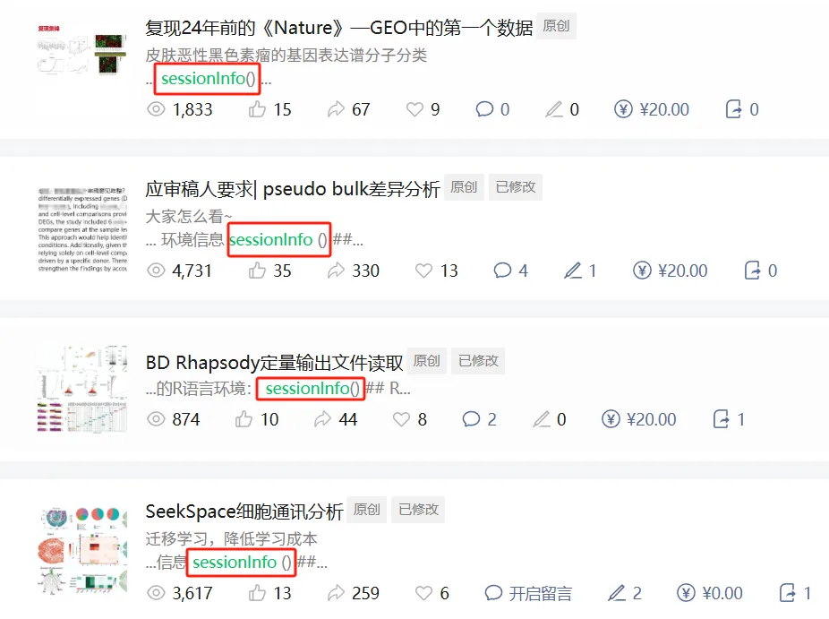
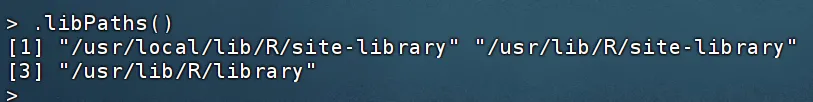
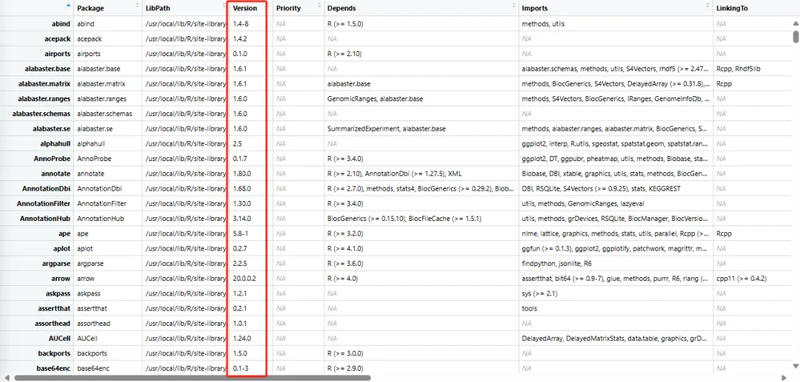

Biomamba的单细胞分析环境大公开！
原文：https://mp.weixin.qq.com/s?__biz=MzAwMzIzOTk5OQ==&mid=2247529901&idx=1&sn=3e9cb1075a3b0b4c253ca19addf8b387&chksm=9b3c0cfdac4b85eb37539a9c48eea51dcaf72aabc0c895c85066939a8f8fc2b8b7d13648499f#rd 合集：单细胞教程全收录
一、学生信最大的障碍
正如大家所见，我们在制作教程时往往会附上sessionInfo信息，毕竟生信代码千千万，安装R包占一半。毕竟一样的数据、一样的代码，如果运行报错，大概率就是分析的软件环境不一样了。大家平时看教程时也可以留意，尽量挑选提供数据、代码、分析环境详细版本信息的教程去follow。很多时候，我们自己的代码换一台新设备也需要调试很久，解决各种包的版本和依赖问题。

二、分析环境获取
1、R包库下载此外，我们还给大家准备了开箱即用的单细胞分析环境(基于R4.4.1)，可以配合scRNA-seq数据分析小白全程班食用，如果大家更希望用自己的电脑做分析，我们也把R包.libPaths给大家打包好了，大家通过这些文件可以调用与Biomamba版本一样打R包。
通过网盘分享的文件：
链接: https://pan.baidu.com/s/1jD8EW2L99RVlREsCRVrVUw?pwd=zvxw
提取码: zvxw
其中包含了632个单细胞分析常见R包(Linux环境)，大家可以需要时下载对应的R包即可
2、如何使用R包库(1)、.libPaths()
.libPaths() 是一个用于管理 R 包安装路径的重要函数，它决定了 R 在安装、加载包时搜索的目录位置。理解并灵活使用 .libPaths() 有助于更好地管理R包，避免版本冲突或权限问题。例如在Rstudio中使用同一个R包的不同版本，便是.libPaths() 的灵活运用。
运行无参数的 .libPaths() 会返回一个字符向量，包含 R 在加载或安装包时优先搜索的目录（顺序越靠前，优先级越高）。

这三个R包路径有一些不同的用途和特点：
"/usr/local/lib/R/site-library":
这个路径通常用于存放系统级别的R包，这些包是由系统管理员安装的，供所有系统用户使用。位于/usr/local/lib的路径表明这些库可能是由管理员或通过超级用户权限安装的，通常不受R默认安装过程的影响，而是独立安装的包。
"/usr/lib/R/site-library":
这个路径与/usr/local/lib/R/site-library相似，也是用来存放系统级的R包。位置在/usr/lib，这通常意味着这些包可能是由操作系统的包管理系统安装的（如使用APT或YUM的Linux系统），或者是系统在初始安装时预装的包。
"/usr/lib/R/library":
这个路径是R的默认库路径，存放的是R的基础包和核心包，这些包随R软件一起被安装。这些包通常是R安装过程的一部分，是R运行的基本组件，包括了统计、图形处理等基础功能的包。
(2) 使用Biomamba的.libPaths()使用方法非常简单，大家只需要下载上面的文件，然后在你即将运行的R语言环境中运行(注意，只在当前R会话中生效)：
*
.libPaths(c("下载文件的存放地址",.libPaths()))
再次运行.libPaths查看是否生效，上面代码若运行成功，则返回信息中会出现你下载的文件地址
*
.libPaths()
或者你也可以加载R包时指定路径
*
library("你需要的包", lib = "下载文件的存放地址")
3、R包信息当然，大家如果愿意挑战下自己，也可以顺着我们的R包信息列表自行安装对应的版本，以下信息由"installed.packages()"函数导出

package_list.txt
下载链接: https://pan.baidu.com/s/1M5C-IgI7Efc8eBXTe213EA?pwd=ey2c
提取码: ey2c
三、分析流程
以上的环境可以支持你完成《scRNA-seq，从小白到文献复现大神》的学习。也就是说，我们的以下教程都可以用这个R包环境去运行：R语言入门课R语言及生信技巧十小时学会Linux《手把手教你做scRNA-seq数据基础分析》一文学会四种scRNA-seq轨迹分析一文学会四种scRNA-seq细胞通讯分析单细胞拷贝数变异学习手册一文学会四种基因共表达网络分析

如何联系我们

 留一个领取资料、开箱即用的单细胞分析镜像的微信号[Biomamba_zhushou]，方便各位随时交流。同时我们也构建了交流群矩阵，欢迎大家入群讨论。
大家可以阅读完这几篇之后添加给生信入门初学者的小贴士
没有检索，就没有发言权
留一个领取资料、开箱即用的单细胞分析镜像的微信号[Biomamba_zhushou]，方便各位随时交流。同时我们也构建了交流群矩阵，欢迎大家入群讨论。
大家可以阅读完这几篇之后添加给生信入门初学者的小贴士
没有检索，就没有发言权
已有生信基地联系方式的同学无需重复添加

 您点的每个赞和在看，我都认真当成了喜欢
您点的每个赞和在看，我都认真当成了喜欢